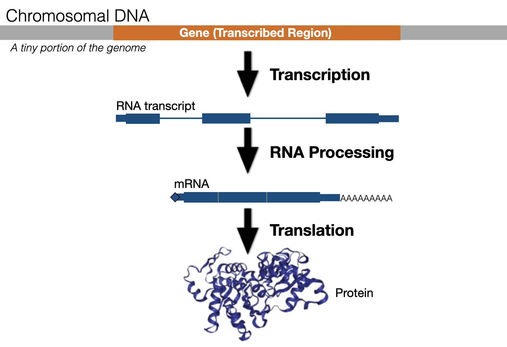
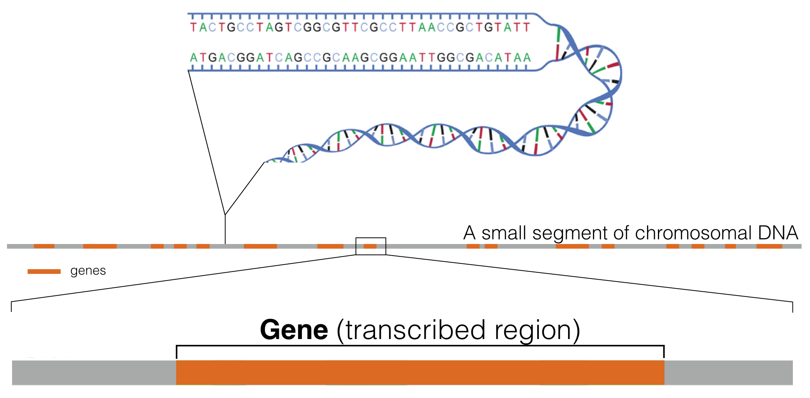
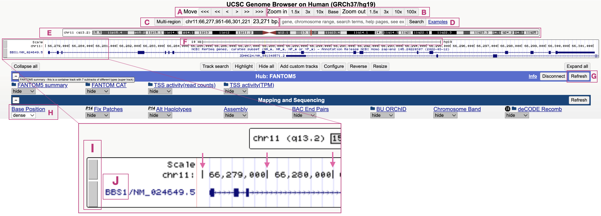

1 Genes, Genomes and Genome Browsers
1.1 What is a gene?
There are many ways to define a gene. One definition: A gene is a segment of double-stranded DNA on a chromosome that directs the production of a functional product (i.e. protein). A significant number of eukaroytic genes are protein coding. Each protein-coding gene first directs the production of an RNA transcript through a process called transcription. This RNA transcript is then processed into a messenger RNA (mRNA). The most notable change that occurs during RNA processing is that intron sequences are removed (See the thin lines in Figure 1.1). The mRNA is then exported from the nucleus and used as a template to make a protein in a process called translation. This entire process (transcription, RNA processing and translation) is known as gene expression. The final product, often protein (but not always) does much of the work necessary to create and maintain organismal structure and function.

Figure 1.1: An overview of Gene Expression. A small segment of a chromosome (light grey) containing a single gene (orange) is shown. The RNA transcript is highlighted as blue rectangles (exons) and blue lines (introns). Introns are removed during RNA processing to create a mature messenger RNA (mRNA)
While the transcribed region of a gene requires additional DNA sequence nearby (i.e. the promoter, see Chapter 5) to get transcribed at the right time and place, for simplicity, the size of a gene (number of base pairs) is typically illustrated by where transcription begins and ends. Thus, the site of transcription initiation and transcription termination defines both gene size and transcript size (but not mRNA size).
1.2 What is a genome?
Genes are distributed along chromosomes2 (Figure 1.2). One complete, nonredundant set of chromosomes for a given species makes up what we call a genome (also called a “haploid genome”)3.
Figure 1.2: This schematic represents a hypothetical segment of a chromosome with orange rectangles representing genes distributed linearly along the DNA segment shown.
In humans, the haploid genome consists of 24 linear chromosomes: 22 autosomes4, two sex chromosomes5, X and Y (Figure 1.3) and one circular mitochondrial chromosome (not shown). Each chromosome varies in length. For example, chromosome one is longest at 248,956,422 base pairs (bp). Given that 10 bp of DNA measures 34 angstroms in length, chromosome one is 82.7 mm (more than three inches if pulled taut)!6 The length (in mm) for the remaining human chromosomes is listed in (Figure 1.3).

Figure 1.3: Actual length of the human genome when scale bar equals one centimeter. Naken mitochondrial DNA is too small to be shown. It is a small circular DNA molecule, with a circumference of 55 microns.
Like most animals, humans are diploid. They consist of 22 pairs of autosomes and one pair of sex chromosomes (either XX or XY). Thus, over two meters (2000 mm) of DNA is crammed into each nucleus7! But the diameter of the average mammalian nucleus is only 6 microns or 0.006 of a millimeter! How does a diploid genome fit? First, the diameter of the DNA double helix is only twenty angstroms8 but also, each chromosome is carefully packaged by proteins in a systematic and stereotypical manner (Figure 1.4).
![This image is modified from Uhler and Shivashankar, 2017. It shows the various levels of chromosome packing found in nuclei during interphase of the cell cycle. The first level of packing requires an octamer of histone proteins that assemble into a ball-like structure called a *nucleosome*. Naked DNA wraps around these octamers forming 'beads on a string'. Additional levels of packing into chromatin fibers and topological associated domains requires additional proteins. Individual chromosomes (23 pairs in humans) are then carefully orgnanized within the cell nucleus in a cell type-dependent manner.](static/images/interphasechromatin.png)
Figure 1.4: This image is modified from Uhler and Shivashankar, 2017. It shows the various levels of chromosome packing found in nuclei during interphase of the cell cycle. The first level of packing requires an octamer of histone proteins that assemble into a ball-like structure called a nucleosome. Naked DNA wraps around these octamers forming ‘beads on a string’. Additional levels of packing into chromatin fibers and topological associated domains requires additional proteins. Individual chromosomes (23 pairs in humans) are then carefully orgnanized within the cell nucleus in a cell type-dependent manner.
1.2.1 Test Your Understanding
Click the link above to see the TYU questions.
1.3 What is a Genome Browser?
According to Wikipedia, Genome browsers enable researchers to visualize genes in a genome with annotated data describing gene structure, gene expression, disease causing mutations and more. They differ from ordinary biological databases in that they display data contributed by multiple sources in a graphical format. They typically consist of a navigational toolbar at the top of the page, a browser window and another toolbar below that allows one to configure the data displatyed in the browser window. The horizontal axis of the browser focuses on a specific segment of the genome. The actual DNA sequence (displayed at the top of the browser window) is only visible if the browser window includes only a short segment less than about 200 bp. By default, only one strand of the genome sequence is displayed when the sequence is visible (the so-called top strand with the 5’ end on the left). Annotations and graphics that describe the region of the genome in the browser window are positioned below the genome sequence at the correct position along the horizontal axis.
There are numerous Genome Browsers available. We will use the UCSC Genome Browser with a focus on the human genome. The human genome sequence is called a “reference genomes”9. Our initial focus will be on a single gene called BBS1. Using BBS1 as our example, you will learn how the UCSC Genome Browser is organized, how to configure so-called “evidence tracks”10, how to navigate through Genome Browser window (scrolling left and right, zooming in and out) and how to understand the graphical data that describe specific gene features.
1.4 Navigating the UCSC Genome Browser
To get started, click the BBS1 session link. You will be taken to the human BBS1 gene in the UCSC Genome Browser. Your web browser window should look like Figure 1.5. Again, at the top of the page you will find the “Navigational Toolbar”(Figure 1.5, A-D). Notice the genome coordinates and the amount of DNA (in base pairs) that is displayed in the browser window (Figure 1.5, C). The navigational toolbar includes a schematic of chromosome eleven showing where BBS1 is located - see red vertical line (Figure 1.5, E). Below that you will find the genome browser window centered around the human BBS1 gene. In fact, it is centered around the transcribed region of BBS1. For BBS1, the transcriptional start site is on the far left, and the transcriptional termination site is on the far right. The regulatory sequence (i.e. promoter) that orchestrates when and where a gene is transcribed is poorly characterized and thus not included in this or any gene annotation.

Figure 1.5: An annotated version of the Genome Browser as it will appear when you click the BBS1 session link provided. See text for annotation details.
This BBS1 session link has been configured to contain only two so-called evidence tracks. Notice there are two gray rectangles on the left side of the browser window (Figure 1.5, I). The top gray box, defines the portion of the browser window dedicated to the Base Position track. The bottom gray box defines the portion of the browser window dedicated to the Gene Prediction track. The Base Position track includes a ruler with units in kilobase pairs. Like any ruler, you will see a series of numbers separated by vertical tick marks, “|” ((Figure 1.5, see arrows in the inset). Those represent base pair positions within the chromosome on display. At this zoom level, each tick mark represents a distance of 1000 bp. To actually view the top strand of the genome sequence in the Base Position track you need to zoom in quite a bit or click “base” as your zoom in option. Try it! Notice that the scale of the ruler changes to base pairs. In general, the Gene Prediction track displays gene schematics indicating the position, orientation, exon/intron structure of all isoforms (one or more) of each gene in the browser window. Our window currently shows BBS1 and part of another overlapping gene, ZDHHC24. Gene names are displayed on the far left of each gene schematic (For BBS1, see Figure 1.5, J). You can see that ZDHHC24 extends farther to the right as indicated by the presence of open triangles on the far right of the gene schematic.
You can use the navigational toolbar to scroll left <<< or right >>> (Figure 1.5, A) or zoom in or out (Figure 1.5, B). The length of DNA (in bp) displayed in the browser window is also indicated including exact coordinates (Figure 1.5, C). Finally, there is a window that one can use to jump to a new gene (Figure 1.5, D). Try it (i.e. jump to ACVR1). You will notice that when you start to type in the gene name, a drop down menu will appear. Click on the your gene of interest (more than one may be listed). This will take you directly to that gene in the genome browser (don’t click “Search”!). If you click “Search” you will be taken to an intervening page that contains a long list of genome databases (I mainly like to use the “NCBI RefSeq genes” database). This page can be confusing. I recommend that you avoid it. Just go back and search again. You can also use this Search window to look for a specific sequence variant (i.e. NM_024649.5:c.274T>C) or genome coordinates (i.e. chr2:157,736,446-157,876,330). The former will be useful in Chapter 7). If you get hopelessly lost and need to get back BBS1, properly formatted, click once again on the BBS1 session link.
Again, the gray rectangles on the left side of the genome browser window (Figure 1.5, I) delineate the boundary of each evidence track displayed. Click on one of the gray rectangles and you will be taken to a “track settings” page for that particular evidence track. Try it. Explore the “track settings” page and the information it provides. Then click the back button to get back. You can also right click on a gray rectangle. This will open a small popup window for quick formatting. Quick formatting options include changing the way the information in the evidence track is displayed (you can choose hide, dense, squish, pack or full). You can also choose “View Image” to display a high resolution image of the browser window (NOTE: This will be useful for your Independent Project! - See the end of Chapter 8).
A toolbar of popular evidence tracks is located below the genome browser window. In fact, you can see which evidence tracks are currently displayed (Figure 1.5, H). An advanced user might choose to show an evidence track from this list. For example, later in the semester we will show the “ShortMatch” evidence track (within “Mapping and Sequencing”). To make a new evidence track visible, you must first click the “Refresh” button (Figure 1.5, G). WARNING: The “GENCODE” evidence track will sometimes appear unexpectedly. This is a bug! When this happens the GENCODE evidence track will no longer be hidden in the browser window. To minimize confusion, you should always hide the “GENCODE” evidence track (right click on its gray rectangle and choose “hide”. It can be confusing when two gene prediction tracks are open at the same time.
Practice navigating through the genome browser. Zoom in. Zoom out. Scroll left. Scroll right. Click on a random position within the chromosome schematic. Hover your mouse over various elements within the browser window to read pop-up messages. Click on any feature for more details. Change track settings to see the impact. If you become hopelessly lost within the human genome or the formatting changes unexpectedly, use the BBS1 session link to get back to sanity.
The most important navigational trick to learn is how to “drag-and-select or click to zoom”. This trick will allow you to zoom in to a specific location within the browser window, a navigational trick we will use repeatedly. Master it now. To start, hover your mouse anywhere within the base position track until a tiny “drag select or click to zoom” popup message appears. This tells you that you are in the right place to “click” then “drag” (with your finger on the trackpad). When you do it correctly, you will create a box around a portion of the gene/genome you want to zoom into (red arrow, Figure 1.6) AND a “Drag-and-Select” popup window will open. Click “Zoom In” and you are done.

Figure 1.6: The drag select or click to zoom tool is very useful.
Again, if you zoom in close enough you will see the actual genome sequence (top strand only) within the Base Position evidence track (Figure 2.2, A). To confirm you are looking at the top strand11? Because the arrow to the left of the genome sequence (see red Asterix, Figure 2.4) is pointing to the right (—>). In molecular biology, the blunt end of an arrow represents the 5’ end of a DNA strand while the pointed end of an arrow represents the 3’ end. Always.
1.4.1 Test Your Understanding
Click the link above to see the TYU questions.
1.5 Addendum
Now that you have more familiarity with gene structure, the following tutorials are highly recommended. They were created by the UCSC Genome Browser team. These are also worth revisiting before you embark on your Independent Project at the end of the term.
- UCSC Genome Browser Basics. Part 1: Getting around in the Browser
- UCSC Genome Browser Basics, Part 2: Configuring the Browser
- UCSC Genome Browser Basics. Part 3: Configuration + DNA navigation
- Saving and Sharing Sessions on the UCSC Genome Browser
- Controlling the visibility of data tracks on the UCSC Genome Browser
- and there is more!
© 2026, Maria Gallegos. All rights reserved.
a chromosome is a single, long molecule of double stranded DNA↩︎
Many organisms are diploid (including humans) meaning they have two copies of every chromosome. Thus the phrase “haploid genome” is more precise, although the word “haploid” is often omitted and simply assumed↩︎
An autosome is one of the numbered chromosomes. Autosomes are numbered roughly in relation to their size.↩︎
A sex chromosome is involved in determining the sex of an individual according to the sex-determination system of the species. In humans, females are typically XX and males are typically XY, although other sex-chromosome combinations occur↩︎
to calculate the length of a chromosome: Multiply the length of a chromosome in base pairs (bp) with 0.000000332, the length (in mm) of each bp.↩︎
All cells in a diploid organism are diploid except reproductive cells which are haploid and red blood cells which lack nuclei altogether↩︎
an angstrom is a unit of length equal to one ten-millionth of a millimeter!↩︎
A “reference genome” (also called a “reference assembly”) is a genome sequence created from thousands of sequence runs assembled in silico to represent the sequence of a genome of one idealized individual organism. Since it is assembled from sequence data obtained from a number of donors, reference genomes do not represent the sequence of any single individual or organism, but rather a mosaic of multiple donors↩︎
each evidence track harbors specific biological data from a single source pertaining to the sequence displayed in the browser window)↩︎
The top strand of DNA is also referred to as the “+ strand”. It is always oriented with the 5’ end on the left↩︎